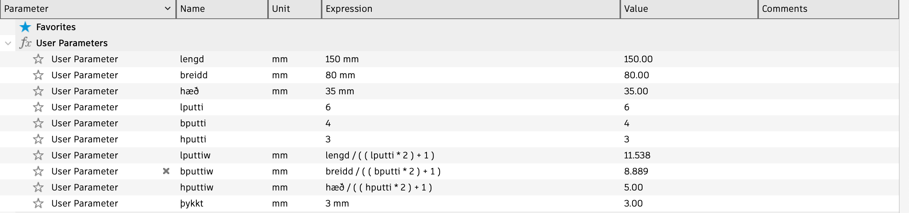

Verkefni 2 - Parametrísk hönnun og tölvustuddur skurður
Um verkefnið
Í þessu verkefni átti ég að gera parametríska hönnun sem var svo laserskorinn. Hönnunin átti að passa saman með pressfit festingu og átti einnig hönnunin að innihalda að minnsta kosti þrjá geirneglda festi punkta. Við fengum val um nokkur mismunandi efni til að skera úr og ákvað ég að velja að skera mína hönnun úr akrýl vegna þess að mig langaði að hönnunin mín væri gegnsæ. Ég átti einnig að gera límmiða sem var svo skorinn. Ég ákvað að gera límmiða af Stjána Bláa að því að hann er töffari.
Tölvustuddur Skurður
Ferlið um að skera út límmiða af Stjána Bláa byrjaði með því að koma með hugmyndina. Fyrst langaði mig að gera límmiða af Jessica Rabbit en ég fann ekki gott silueta af henni á netinu. Einnig voru allar myndirnar sem ég fann á netinu af henni marglitar svo það væri ekki flott að hafa límmiðann einlitan. Svo ég googlaði "Movie cartoon character silueta" og þar fann ég góða mynd af Stjána Bláa. Þegar ég var búinn að finna myndina þurfti ég að hlaða henni niður og setja myndina í Inkscape.
Ferlið að gera límmiðan í Inkscape
skref 1 - Setja myndina inn í Inkscape
Veljum file uppi í vinstra horninu og förum svo í import og finnum þar myndina sem við vistuðum niður í tölvuna. Í mínu tilfelli var myndin JPG skrá.
skref 2 - Trace bitmap
Þegar myndin er kominn inn í Inkscape þurfum við svo að fara í path og svo trace bitmap til að gera myndina að vektor. Hægt er að sjá hvort myndin sé vektor eða ekki með því að skoða hvort myndin er með pixla eða ekki.

skref 3 - vinna með trace bitmap myndina
Eftir skref 2 ætti að vera tvær myndir í inkscape og við viljum nota myndina sem er með öllum punktunum og eyðum upprunalegu myndinni sem við settum inn í upphafi.

skref 4 - Fill and Stroke
Veljum bitmap myndina sem við gerðum í skrefi 3 og förum svo uppi í vinstra hornið og veljum object svo fill and stroke.

skref 5 - Fill and Stroke stillingar
Þegar við erum komin í fill and stroke veljum við þessar stillingar, fill: no paint, Stroke paint: Flat color, Stroke Style: width = 0.020 mm.


Þegar þessar stillingar eru valdnar ætti myndin að vera örþunnar útlínur eins og sést á mynd fyrir neðan:

skref 6 - Export
Næst viljum við færa myndina úr Inkscape yfir í PDF skjal. Það gerum við með því að fara í file og velja Export. Pössum að velja PDF skjal. Svo smellum við á export og veljum góðann stað fyrir PDF skjalið


skref 7 - Skera límmiðann
Ég setti PDF skjalið mitt í minnislykil og fór í tölvuna sem er við tækið sem sker út límmiðana í skrifstofunni hanns Hafliða þar sem hann setti minnislykilinn í tölvuna og setti skjalið upp fyrir mig og skar út.
Hér er mynd af tækinu sem skar út límmiðann minn

Og hér er mynd af límmiðanum mínum sem ég ákvað að setja á tölvuna mína
____________________________________________________________________
Parametrísk hönnun
Fyrst byrjaði ég að skoða YouTube myndband sem var í verkefnalýsingunni. Ég hermdi eftir þessari teikningu í minu verkefni. Breytti aðeins parametrum en annars er þetta mjög líkt. Hefði viljað gera eitthvað sem ég hannaði sjálfur en var stressaður að ég hefði ekki nægan tíma til að gera súpuróbotinn í Tölvustýrðum Vélbúnaði. Ákvað því að gera einfalda hönnun en svo var gefin frestur fyrir bæði verkefnin þannig hefði átt að gera eitthvað sniðugt. Ég notaði Fusion 360 til að hanna verkefnið mitt og er ferlið um hvernig ég gerði verkefnið hér fyrir neðan.
Að hanna kassann
Fyrst byrjaði ég að setja upp parametrana sem ég ætlaði að nota í teikningunni minni.
Ég vildi hafa kassann minn frekar lítinn svo ég get sett bíllyklana og húslyklana mína í hann. Það er líka ástæðan af hverju ég vildi hafa kassann minn glærann því þá er auðveldara að sjá hvaða lykl ég er að taka.
Þegar ég var sáttur með parametrana byrjaði ég að teikna. Skrefin voru frekar einföld, fyrst gerði ég ferhyrning og svo bætti ég við götum á hliðina fyrir puttana. Ég notaði Rectengular pattern til að gera puttana. Það passar að öll götin séu jafn stór og með jafnt bil svo sparar það mig einnig smá tíma.

Sýðan gerði ég new sketch og setti það á sá hlið sem götin fyrir puttana voru á kassanum.

síðan notaði ég Extrude og setti hæðina sem "-þykkt" og passaði að velja New body í Extrusion. Annars festist þett allt saman og Fusion heldur að þetta sé allt sami parturinn.
Svo nota ég combine og cut svo að götin fyrir puttana í kassanum sem við teiknuðum fyrst skera göt í kassann sem við vorum að gera og þá verða götin jafn stór fyrir báða kassana.
Þetta er gert við allar hliðar þar til kassinn er tilbúinn. Næst þarf að fara úr Design og yfir í Manufacture. Þar viljum við gera new setup fyrir allar hliðarnar á kassanum.
Undirbúa teikningu fyrir laserskurð
Þegar það er komið getum við farið yfir í cutting og þá erum við að undirbúa kassann fyrir laserskurð. Í Geometry veljum við þann part af kassanum sem við ætlum að skera. Í okkar tilfelli eru það allar hliðarnar svo við þurfum að gera það fyrir allar hliðar. Svo í linking viljum við að Lead-in og Lead-out sé ekki valið
Að velja kerf
Ekki er hægt að skera út án þess að vita kerf á lasernum. Svo ég skar út kassa sem var 30mmx30mm og 3mm þykkur. Eftir skurð varð hann 29.7mm*29.7mm og 3 mm þykkur svo ég vissi að kerf á lasernum var 0.3mm. Þetta átti að vera hópverkefni en ég var einn í hóp. Þegar við vitum kerf þurfum við að setja það í Fusion. Þetta gerum við með því að fara í Manage og Tool Library. Eftir það förum við og veljum laser cutter. Þar er hægt að stilla kerf og í okkar tilfelli segum við að kerf sé 0.3 mm.

Setja í Inkscape
Þegar við erum búin að þessu þurfum við að sækja skrána sem DXF skrá til að vinna með í Inkscape. Það gerum við með því að fara í Actions og svo post process. Þar getum við valið að sækja verkefnið sem DXF skrá. Passa sérstaklega að Output as 2D, Only Cutting og Put operations in separate layers sé allt valið áður en við sækjum DXF skrána
Þegar við erum kominn með DXF skánna setjum við hana í Inkscape og gerum nákvælega það sama eins og við gerðum fyrir límmiðann. Nema í þetta skipti viljum við að skráin sé .svg skrá ekki PDF

Þegar þetta er búið þarf að setja skránna í tölvuna sem er við laserskurðarvélina og hlaða þar inn svg skránni í Inkscape. Svo ctrl + P til að geta skorið út. Svo setjum við inn þyktina á efninu sem var 3mm í mínu tilfelli og skerum.
Mynd af vélinni skera út kassann minn
Setja kassann saman
Beint eftir skurð lýtur kassinn minn svona út

Svo einfaldlega setjum við kassann saman og þá lýtur hann svona út.

setti nokkra hluti í kassann til að sýna stærð
Helstu erfiðleikar
Að finna kerf var smá vesen. Mældi fyrst 0.35 mm og svo þegar ég gerði prufu þá passaði það ekki. Svo ég skar aftur út nýan ferhyrning og þá mældi ég 0.3 mm og gerði aðra prufu sem smell passaði. En þegar ég skar út kassann minn þá voru nokkar festingar sem voru smá leiðinlegar. Hann passar vel saman en eru þó nokkar festingar sem eru smá lausar. Var líka í smá veseni að gera setup í Fusion. Fékk oft villur og var smá hausverkur að láta cutting virka fyrir alla partana mína. Það var alltaf einhver sem var leiðinlegur og var ég lengi að finna útur því. En þá var ég að setja Z-ásinn í margar mismunandi áttir svo Fusion var að skera mismunandi stærðir á sama ás sem gerði það að verkum að hann var að skera sama hlutinn oftar en einu sinni. En ég leysti þetta með því að einfaldlega hafa Z-ásinn minn réttan í öllum mismunandi setup hjá mér. Að bæta við skjölum er líka ekki að virka hjá mér. Virkar í Brackets en þegar ég færi skránna yfir á github þá birtist það ekki. En hér er mynd hvernig þetta er í Brackets ef þetta sést ekki þegar það er verið að fara yfir vefsíðuna mína. En auðvitað virka þessir hlekkir ekki því þetta er mynd.

Vinnuframlag
Tafla sem lýsir vinnuálaginu í klst
| Verkefni | Vinnutími [Klst] |
|---|---|
| Undirbúningur | 2 |
| Gera límmiða | 4 |
| Finna kerf | 2 |
| Teikna kassa | 3 |
| Undirbúa laserskurð og skera | 3 |
| Samsetning | 1 |
| Gera vefsíðu | 6 |
| Tími sammtals | 21 klst |